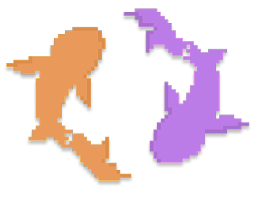
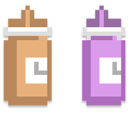
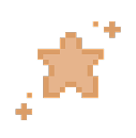
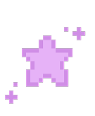
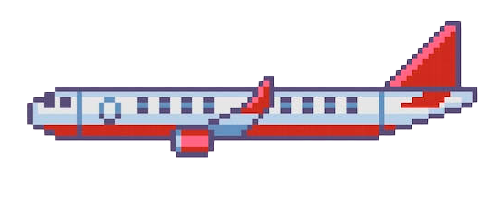
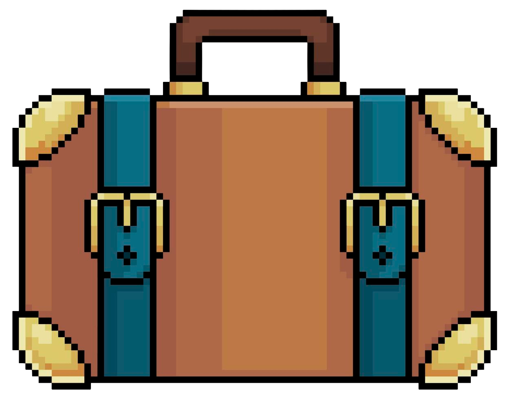

Reflexos


Júlia Araripe
Para a Júlia, a amizade com a Débora é construída pela soma de todos os momentos vividos desde que se conheceram na ETEC, em 2019. Entre viagens, conversas e reflexões compartilhadas, cada memória se tornou especial ao lado de alguém que ela admira profundamente. E quando pensa no futuro, faz questão de imaginar a Débora realizando todos os seus sonhos e, claro, ela junto, porque algumas amizades acabam se tornando parte daquilo que chamamos de casa.

Débora Flores
Para a Débora, a amizade com a Júlia foi construída naturalmente, crescendo com o tempo até se tornar uma presença constante em todas as áreas da vida. Mais do que grandes acontecimentos, ela valoriza os pequenos momentos, a energia diária, a escuta ativa e as conversas que tornam tudo mais leve. E talvez seja por isso que sua resposta para o melhor momento das duas seja tão simples e especial: "O melhor momento é sempre o próximo".
Desde 2019

Tudo começou de forma simples. Em 2019, duas colegas de turma da ETEC se conheceram sem imaginar o quanto suas vidas se cruzariam dali em diante. O que começou com a convivência do dia a dia foi, aos poucos, se transformando em algo muito maior, acompanhando estudos, trabalho e todas as fases da vida.
Com o passar dos anos, a amizade cresceu naturalmente, sem pressa, até se tornar uma presença constante. Hoje, é difícil imaginar uma história sem a outra, afinal, como a própria Júlia diz: "nunca mais nos separamos, e espero que isso nunca aconteça".
Memórias que Viraram Casa

Se perguntadas sobre o melhor momento que viveram juntas, talvez nenhuma das duas consiga escolher apenas um. Das viagens para o IT Forum e das aventuras na Bahia às conversas que se estendiam por horas, cada lembrança carrega um significado especial. Até mesmo os dias comuns de trabalho se transformaram em momentos que merecem ser guardados.
E talvez seja justamente aí que mora a beleza dessa amizade. Para Júlia, todos os momentos têm valor. Para Débora, "o melhor momento é sempre o próximo". Porque, mais do que grandes acontecimentos, elas aprenderam a encontrar felicidade nas pequenas coisas e a transformar o cotidiano em memórias inesquecíveis.
Um Futuro Compartilhado


Quando imagina Débora no futuro, Júlia não pensa em cargos, títulos ou conquistas materiais. Ela a vê realizando todos os seus sonhos, vivendo com amor, felicidade e alegria. E, é claro, faz questão de acrescentar: "eu junto, senão acabou eu". Para Júlia, o futuro ideal é aquele em que ambas continuam compartilhando a vida e os momentos mais importantes.
Já Débora imagina Júlia vivendo de forma plena, segura e leve em todas as áreas da vida. E talvez isso diga muito sobre a amizade das duas. Em meio a todos os sonhos e caminhos que ainda estão por vir, existe uma certeza silenciosa: independentemente de onde a vida as leve, continuarão celebrando conquistas, compartilhando momentos e construindo novos capítulos lado a lado. .